← Back to Projects
11 • Commercial + Creative
Crescent Design Hub
A civic-facing creative campus where design studios, public exhibition, collaboration spaces and a light-filled atrium converge.
CREATIVITY MADE PUBLIC
Design Narrative
Creativity becomes visible when the building turns inward-facing studio work into a public urban experience.
The project positions creativity as a public experience: the atrium becomes an interface between studio work, exhibition, collaboration and the city.
Crescent as civic gesture, transparent atrium, flexible studios and public interface.
Transparent atriumFlexible studiosPublic exhibitionCollaboration spacesClimate-responsive envelopeDaylight + wellbeing
Strategic Lens — Creative Civic Interface
How can a design hub operate as workplace, exhibition platform and city-facing institution at the same time?
Make the atrium the connective civic room and the crescent form the public gesture.
Transparent atrium, flexible studios, exhibition interfaces and a climate-responsive envelope connect making with the city.
A luminous central room where making, meeting and exhibiting overlap.
The building’s identity is generated by productive interaction, not branding applied to a façade.
Curated Visual Gallery
Crescent Design Hub
A visual sequence of architecture, atmosphere, movement and detail.

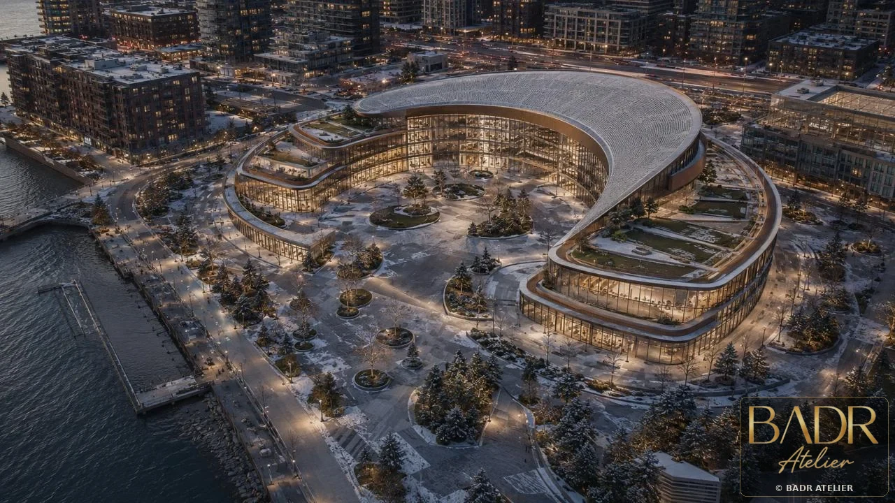
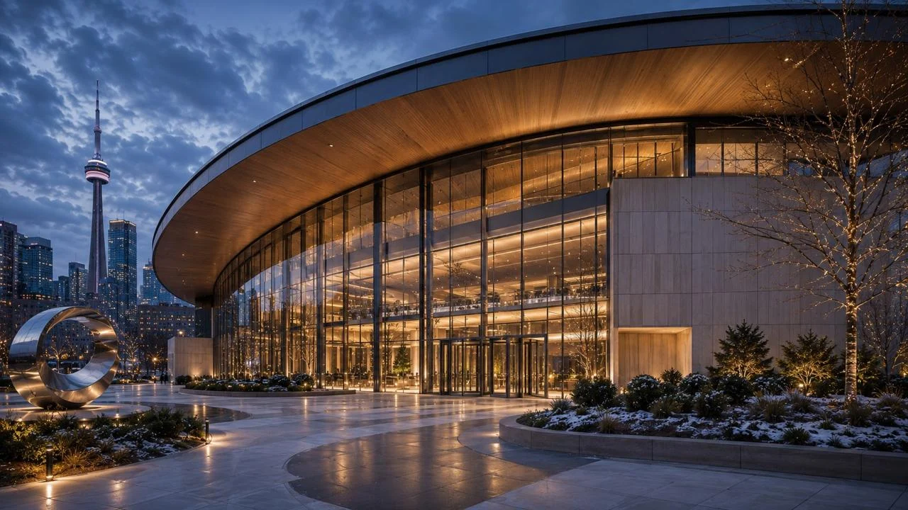
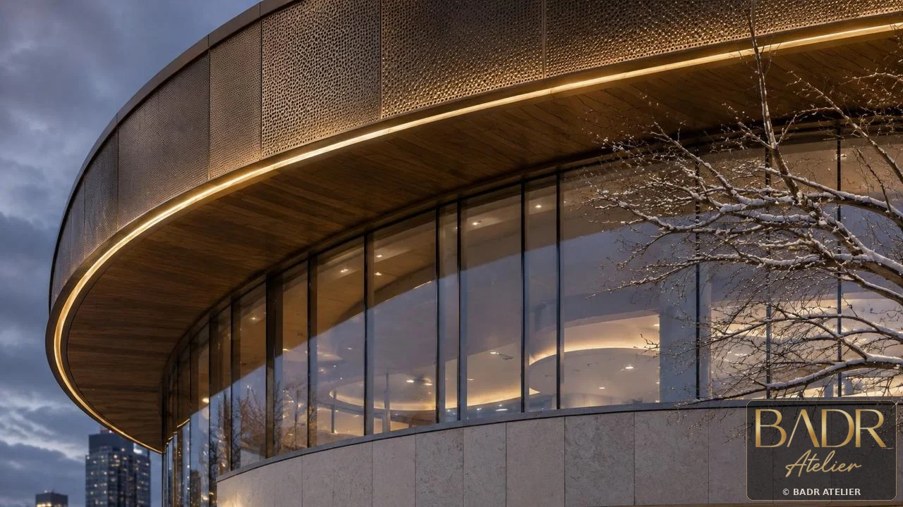
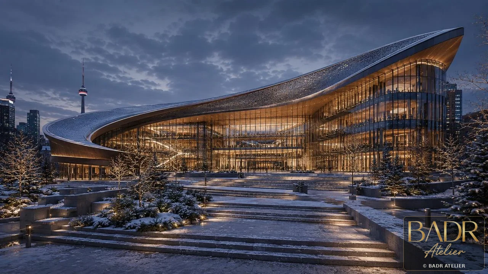
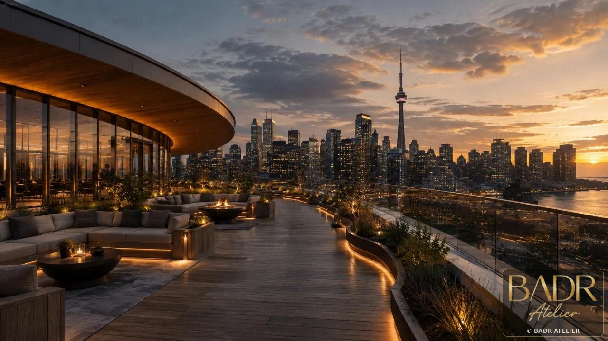
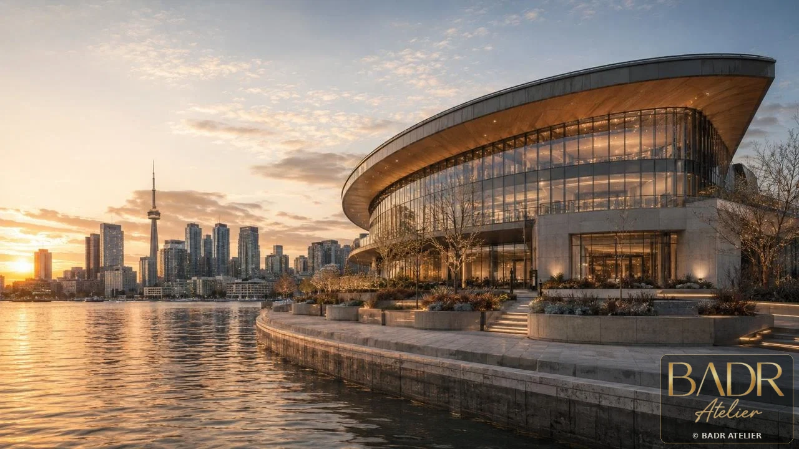
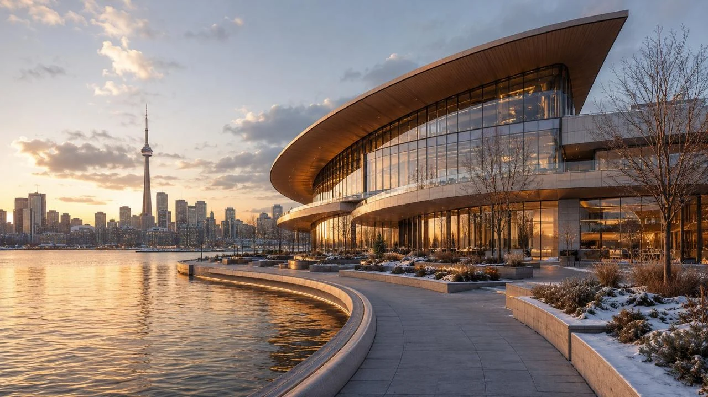
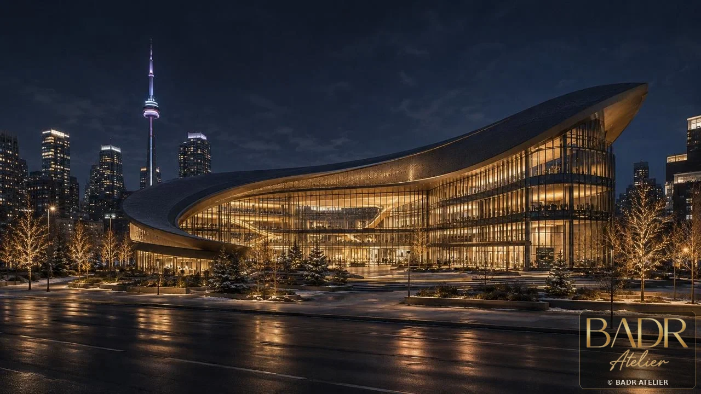
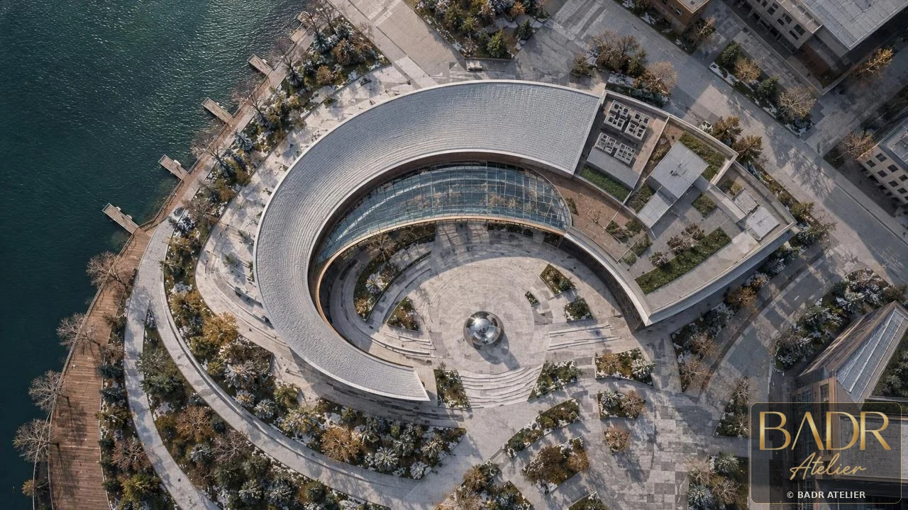
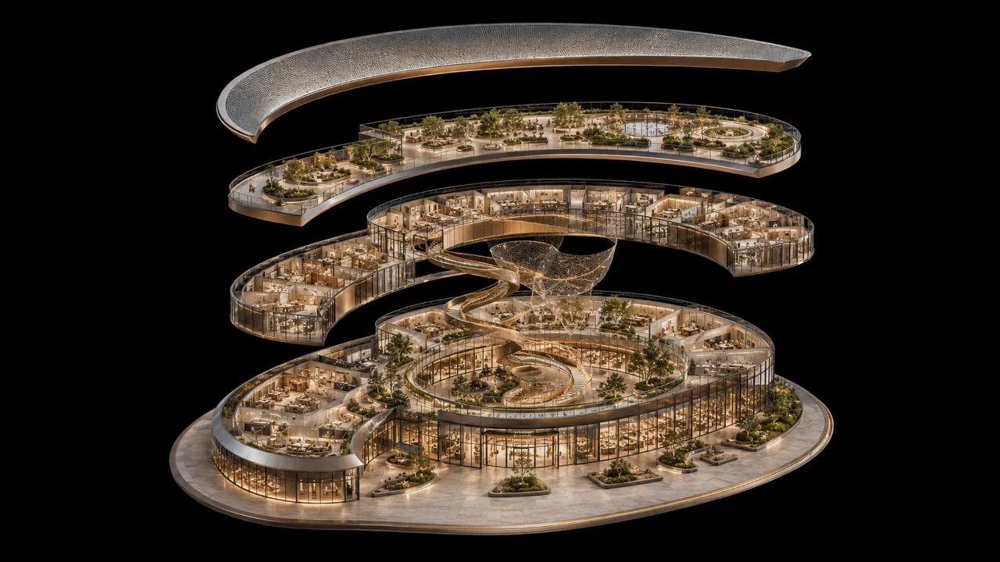
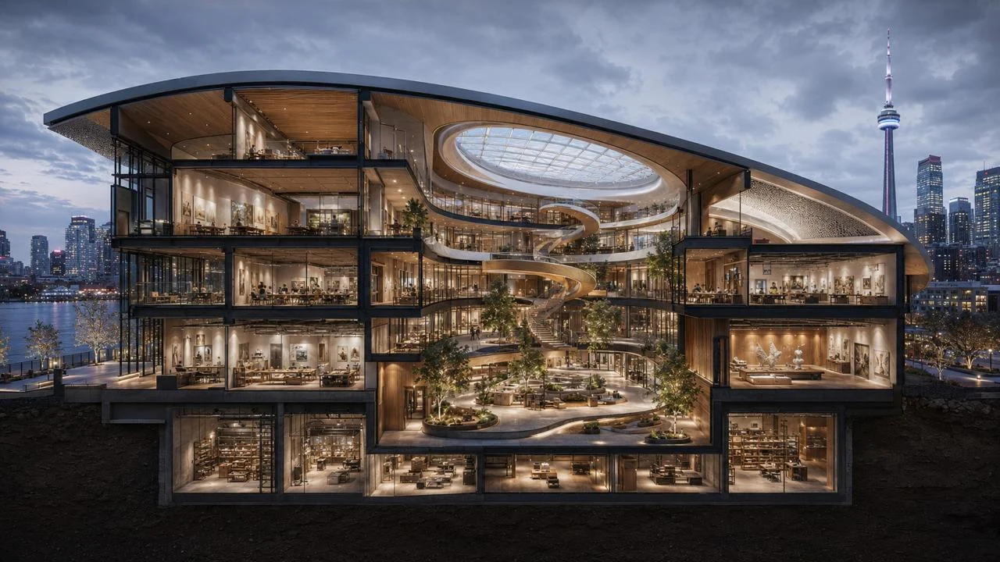
Key Features
- Transparent atrium
- Flexible studios
- Public exhibition
- Collaboration spaces
- Climate-responsive envelope
- Daylight + wellbeing
Spaces + Experiences
- Atrium
- Studios
- Exhibition spaces
- Collaboration lounges
- Public interface
- Wellbeing areas